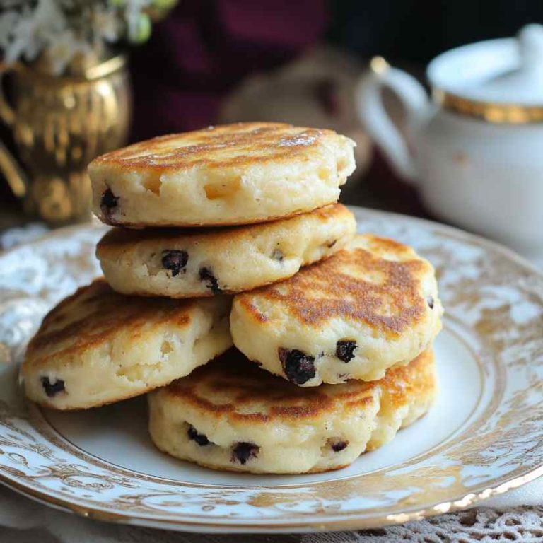
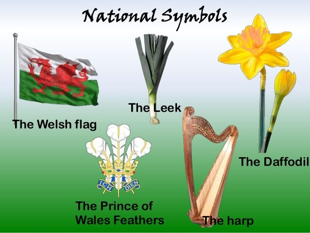

Welsh culture is full of music, language, sport, food and national pride. From rugby matches to traditional Welsh cakes, Wales has a strong identity that is celebrated around the world.
Rugby is one of Wales' most loved sports and a huge part of Welsh pride.

Welsh cakes, bara brith and cawl are popular traditional foods.

The red dragon, daffodil and leek are famous symbols of Wales.